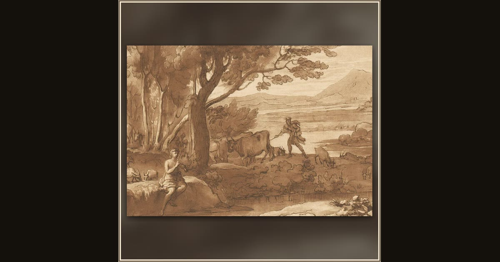

Landschap met Mercurius die het vee van Apollo steelt
Richard Earlom, after Claude Lorrain · 1776 · rijksmuseum
A figure plays a pipe beneath the trees while Mercury leads cattle away through the landscape, recalling Maia's son taking cattle from the gods' herd (73–75) Explore its place in Homer's The Homeric Hymns, Hymn 4 · To Hermes, line 73.